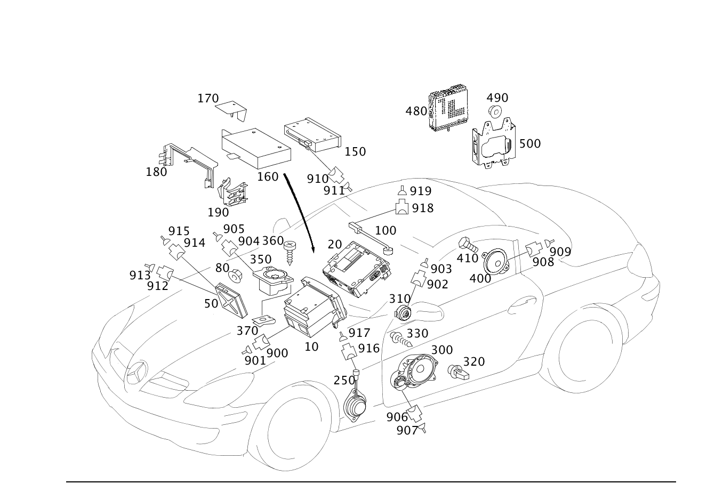

| № | Артикул | Название | Кол. | Примечание | Ограничение |
|---|---|---|---|---|---|
| 10 | A 171 900 13 00 | Блок управления (STEUERGERAET) | 1 | [672] ДЕТАЛЬ ПОСЛЕ УСТАН.ПРОВЕРИТЬ НА АКТУАЛЬНОСТЬ "ПРОШИВНОГО" ПО [697] ДЕТАЛЬ ПОСТАВЛЯЕТСЯ ТОЛЬКО/ИЛИ ТАКЖЕ КАК ЗАП.ЧАСТЬ | 512+494 |
| 10 | A 171 820 02 86 | Радиоприемник | 1 | AUDIO 20 [697] ДЕТАЛЬ ПОСТАВЛЯЕТСЯ ТОЛЬКО/ИЛИ ТАКЖЕ КАК ЗАП.ЧАСТЬ | 523 |
| 10 | A 171 820 05 86 | Радиоприемник | 1 | [697] ДЕТАЛЬ ПОСТАВЛЯЕТСЯ ТОЛЬКО/ИЛИ ТАКЖЕ КАК ЗАП.ЧАСТЬ | 523 |
| 10 | A 171 820 07 86 | Радиоприемник | 1 | [697] ДЕТАЛЬ ПОСТАВЛЯЕТСЯ ТОЛЬКО/ИЛИ ТАКЖЕ КАК ЗАП.ЧАСТЬ | 523 |
| 10 | A 171 820 03 86 | Устройство управления | 1 | [697] ДЕТАЛЬ ПОСТАВЛЯЕТСЯ ТОЛЬКО/ИЛИ ТАКЖЕ КАК ЗАП.ЧАСТЬ | 523 |
| 10 | A 171 870 16 94 | ПАНЕЛЬ УПРАВЛ. | 1 | [525] ОБРАТНАЯ СВЯЗЬ ОБЯЗАТЕЛЬНО ЧЕРЕЗ СИСТЕМУ РАСЧЕТОВ SYREK В ФРГ ДЕТАЛЬ ЗАКАЗЫВАТЬ КАК ВОССТАНОВЛЕННУЮ ДЕТАЛЬ [697] ДЕТАЛЬ ПОСТАВЛЯЕТСЯ ТОЛЬКО/ИЛИ ТАКЖЕ КАК ЗАП.ЧАСТЬ | 523 |
| 10 | A 171 870 52 94 | Устройство управления | 1 | [525] ОБРАТНАЯ СВЯЗЬ ОБЯЗАТЕЛЬНО ЧЕРЕЗ СИСТЕМУ РАСЧЕТОВ SYREK В ФРГ ДЕТАЛЬ ЗАКАЗЫВАТЬ КАК ВОССТАНОВЛЕННУЮ ДЕТАЛЬ [697] ДЕТАЛЬ ПОСТАВЛЯЕТСЯ ТОЛЬКО/ИЛИ ТАКЖЕ КАК ЗАП.ЧАСТЬ | 523 |
| 10 | A 171 870 53 94 | Элемент управления | 1 | [525] ОБРАТНАЯ СВЯЗЬ ОБЯЗАТЕЛЬНО ЧЕРЕЗ СИСТЕМУ РАСЧЕТОВ SYREK В ФРГ ДЕТАЛЬ ЗАКАЗЫВАТЬ КАК ВОССТАНОВЛЕННУЮ ДЕТАЛЬ [697] ДЕТАЛЬ ПОСТАВЛЯЕТСЯ ТОЛЬКО/ИЛИ ТАКЖЕ КАК ЗАП.ЧАСТЬ | 523 |
| 10 | A 171 900 01 00 | Блок управления (STEUERGERAET) | 1 | [525] ОБРАТНАЯ СВЯЗЬ ОБЯЗАТЕЛЬНО ЧЕРЕЗ СИСТЕМУ РАСЧЕТОВ SYREK В ФРГ ДЕТАЛЬ ЗАКАЗЫВАТЬ КАК ВОССТАНОВЛЕННУЮ ДЕТАЛЬ [697] ДЕТАЛЬ ПОСТАВЛЯЕТСЯ ТОЛЬКО/ИЛИ ТАКЖЕ КАК ЗАП.ЧАСТЬ | 523 |
| 10 | A 171 820 06 86 | Радиоприемник | 1 | AUDIO 20 | 535 |
| 10 | A 171 820 08 86 | Радиоприемник | 1 | AUDIO 20 [697] ДЕТАЛЬ ПОСТАВЛЯЕТСЯ ТОЛЬКО/ИЛИ ТАКЖЕ КАК ЗАП.ЧАСТЬ | 535 |
| 10 | A 171 820 04 86 | Радиоприемник | 1 | 535 | |
| 10 | A 171 870 00 89 | Устройство управления (BEDIENGERAET) | 1 | [402] БОЛЬШЕ НЕ ПОСТАВЛЯЕТСЯ | 535 |
| 10 | A 171 820 15 89 | Устройство управления | 1 | 525 | |
| 10 | A 171 820 03 97 | Устройство управления | 1 | AUDIO 50 [697] ДЕТАЛЬ ПОСТАВЛЯЕТСЯ ТОЛЬКО/ИЛИ ТАКЖЕ КАК ЗАП.ЧАСТЬ | 525 |
| 10 | A 171 820 31 89 | Элемент управления | 1 | AUDIO 50 [697] ДЕТАЛЬ ПОСТАВЛЯЕТСЯ ТОЛЬКО/ИЛИ ТАКЖЕ КАК ЗАП.ЧАСТЬ | 525 |
| 10 | A 171 820 32 89 | Элемент управления | 1 | AUDIO 50 [697] ДЕТАЛЬ ПОСТАВЛЯЕТСЯ ТОЛЬКО/ИЛИ ТАКЖЕ КАК ЗАП.ЧАСТЬ | 525 |
| 10 | A 171 820 40 89 | Элемент управления | 1 | AUDIO 50 [697] ДЕТАЛЬ ПОСТАВЛЯЕТСЯ ТОЛЬКО/ИЛИ ТАКЖЕ КАК ЗАП.ЧАСТЬ | 525 |
| 10 | A 171 820 41 89 | Устройство управления | 1 | AUDIO 50; AUDIO 50 APS ECE [697] ДЕТАЛЬ ПОСТАВЛЯЕТСЯ ТОЛЬКО/ИЛИ ТАКЖЕ КАК ЗАП.ЧАСТЬ | 525 |
| 10 | A 171 820 35 89 | Устройство управления | 1 | AUDIO 50; HU [697] ДЕТАЛЬ ПОСТАВЛЯЕТСЯ ТОЛЬКО/ИЛИ ТАКЖЕ КАК ЗАП.ЧАСТЬ | 525 |
| 10 | A 171 820 67 89 | Устройство управления | 1 | AUDIO 50 [697] ДЕТАЛЬ ПОСТАВЛЯЕТСЯ ТОЛЬКО/ИЛИ ТАКЖЕ КАК ЗАП.ЧАСТЬ | 525 |
| 10 | A 171 820 80 89 | Элемент управления | 1 | AUDIO 50 [525] ОБРАТНАЯ СВЯЗЬ ОБЯЗАТЕЛЬНО ЧЕРЕЗ СИСТЕМУ РАСЧЕТОВ SYREK В ФРГ ДЕТАЛЬ ЗАКАЗЫВАТЬ КАК ВОССТАНОВЛЕННУЮ ДЕТАЛЬ [697] ДЕТАЛЬ ПОСТАВЛЯЕТСЯ ТОЛЬКО/ИЛИ ТАКЖЕ КАК ЗАП.ЧАСТЬ | 525 |
| 10 | A 171 820 81 89 | Устройство управления | 1 | AUDIO 50 [525] ОБРАТНАЯ СВЯЗЬ ОБЯЗАТЕЛЬНО ЧЕРЕЗ СИСТЕМУ РАСЧЕТОВ SYREK В ФРГ ДЕТАЛЬ ЗАКАЗЫВАТЬ КАК ВОССТАНОВЛЕННУЮ ДЕТАЛЬ [697] ДЕТАЛЬ ПОСТАВЛЯЕТСЯ ТОЛЬКО/ИЛИ ТАКЖЕ КАК ЗАП.ЧАСТЬ | 525 |
| 10 | A 171 870 18 94 | ПАНЕЛЬ УПРАВЛ. | 1 | [525] ОБРАТНАЯ СВЯЗЬ ОБЯЗАТЕЛЬНО ЧЕРЕЗ СИСТЕМУ РАСЧЕТОВ SYREK В ФРГ ДЕТАЛЬ ЗАКАЗЫВАТЬ КАК ВОССТАНОВЛЕННУЮ ДЕТАЛЬ [697] ДЕТАЛЬ ПОСТАВЛЯЕТСЯ ТОЛЬКО/ИЛИ ТАКЖЕ КАК ЗАП.ЧАСТЬ | 525 |
| 10 | A 171 870 28 94 | ПАНЕЛЬ УПРАВЛ. | 1 | [525] ОБРАТНАЯ СВЯЗЬ ОБЯЗАТЕЛЬНО ЧЕРЕЗ СИСТЕМУ РАСЧЕТОВ SYREK В ФРГ ДЕТАЛЬ ЗАКАЗЫВАТЬ КАК ВОССТАНОВЛЕННУЮ ДЕТАЛЬ [697] ДЕТАЛЬ ПОСТАВЛЯЕТСЯ ТОЛЬКО/ИЛИ ТАКЖЕ КАК ЗАП.ЧАСТЬ | 525 |
| 10 | A 171 870 44 94 | ПАНЕЛЬ УПРАВЛ. | 1 | [525] ОБРАТНАЯ СВЯЗЬ ОБЯЗАТЕЛЬНО ЧЕРЕЗ СИСТЕМУ РАСЧЕТОВ SYREK В ФРГ ДЕТАЛЬ ЗАКАЗЫВАТЬ КАК ВОССТАНОВЛЕННУЮ ДЕТАЛЬ [697] ДЕТАЛЬ ПОСТАВЛЯЕТСЯ ТОЛЬКО/ИЛИ ТАКЖЕ КАК ЗАП.ЧАСТЬ | 525 |
| 10 | A 171 870 56 94 | Устройство управления | 1 | [525] ОБРАТНАЯ СВЯЗЬ ОБЯЗАТЕЛЬНО ЧЕРЕЗ СИСТЕМУ РАСЧЕТОВ SYREK В ФРГ ДЕТАЛЬ ЗАКАЗЫВАТЬ КАК ВОССТАНОВЛЕННУЮ ДЕТАЛЬ [697] ДЕТАЛЬ ПОСТАВЛЯЕТСЯ ТОЛЬКО/ИЛИ ТАКЖЕ КАК ЗАП.ЧАСТЬ | 525 |
| 10 | A 171 870 80 94 | Элемент управления | 1 | [525] ОБРАТНАЯ СВЯЗЬ ОБЯЗАТЕЛЬНО ЧЕРЕЗ СИСТЕМУ РАСЧЕТОВ SYREK В ФРГ ДЕТАЛЬ ЗАКАЗЫВАТЬ КАК ВОССТАНОВЛЕННУЮ ДЕТАЛЬ [697] ДЕТАЛЬ ПОСТАВЛЯЕТСЯ ТОЛЬКО/ИЛИ ТАКЖЕ КАК ЗАП.ЧАСТЬ | 525 |
| 10 | A 171 870 57 94 | Элемент управления | 1 | [525] ОБРАТНАЯ СВЯЗЬ ОБЯЗАТЕЛЬНО ЧЕРЕЗ СИСТЕМУ РАСЧЕТОВ SYREK В ФРГ ДЕТАЛЬ ЗАКАЗЫВАТЬ КАК ВОССТАНОВЛЕННУЮ ДЕТАЛЬ [697] ДЕТАЛЬ ПОСТАВЛЯЕТСЯ ТОЛЬКО/ИЛИ ТАКЖЕ КАК ЗАП.ЧАСТЬ | 525 |
| 10 | A 171 906 10 00 | Элемент управления | 1 | [525] ОБРАТНАЯ СВЯЗЬ ОБЯЗАТЕЛЬНО ЧЕРЕЗ СИСТЕМУ РАСЧЕТОВ SYREK В ФРГ ДЕТАЛЬ ЗАКАЗЫВАТЬ КАК ВОССТАНОВЛЕННУЮ ДЕТАЛЬ [697] ДЕТАЛЬ ПОСТАВЛЯЕТСЯ ТОЛЬКО/ИЛИ ТАКЖЕ КАК ЗАП.ЧАСТЬ | 525 |
| 10 | A 171 906 23 00 | Элемент управления (BEDIENTEIL) | 1 | [525] ОБРАТНАЯ СВЯЗЬ ОБЯЗАТЕЛЬНО ЧЕРЕЗ СИСТЕМУ РАСЧЕТОВ SYREK В ФРГ ДЕТАЛЬ ЗАКАЗЫВАТЬ КАК ВОССТАНОВЛЕННУЮ ДЕТАЛЬ [697] ДЕТАЛЬ ПОСТАВЛЯЕТСЯ ТОЛЬКО/ИЛИ ТАКЖЕ КАК ЗАП.ЧАСТЬ | 525 |
| 10 | A 171 900 03 00 | Блок управления | 1 | [525] ОБРАТНАЯ СВЯЗЬ ОБЯЗАТЕЛЬНО ЧЕРЕЗ СИСТЕМУ РАСЧЕТОВ SYREK В ФРГ ДЕТАЛЬ ЗАКАЗЫВАТЬ КАК ВОССТАНОВЛЕННУЮ ДЕТАЛЬ [697] ДЕТАЛЬ ПОСТАВЛЯЕТСЯ ТОЛЬКО/ИЛИ ТАКЖЕ КАК ЗАП.ЧАСТЬ | 525 |
| 10 | A 171 820 16 89 | Элемент управления | 1 | COMAND [697] ДЕТАЛЬ ПОСТАВЛЯЕТСЯ ТОЛЬКО/ИЛИ ТАКЖЕ КАК ЗАП.ЧАСТЬ | 527 |
| 10 | A 171 820 29 89 | Устройство управления | 1 | COMAND [697] ДЕТАЛЬ ПОСТАВЛЯЕТСЯ ТОЛЬКО/ИЛИ ТАКЖЕ КАК ЗАП.ЧАСТЬ | 527 |
| 10 | A 171 820 33 89 | Элемент управления | 1 | COMAND [697] ДЕТАЛЬ ПОСТАВЛЯЕТСЯ ТОЛЬКО/ИЛИ ТАКЖЕ КАК ЗАП.ЧАСТЬ | 527 |
| 10 | A 171 820 42 89 | Элемент управления | 1 | COMAND [697] ДЕТАЛЬ ПОСТАВЛЯЕТСЯ ТОЛЬКО/ИЛИ ТАКЖЕ КАК ЗАП.ЧАСТЬ | 527 |
| 10 | A 171 820 36 89 | Устройство управления | 1 | COMAND; HU [697] ДЕТАЛЬ ПОСТАВЛЯЕТСЯ ТОЛЬКО/ИЛИ ТАКЖЕ КАК ЗАП.ЧАСТЬ | 527 |
| 10 | A 171 820 62 89 | Элемент управления | 1 | COMAND; HU [697] ДЕТАЛЬ ПОСТАВЛЯЕТСЯ ТОЛЬКО/ИЛИ ТАКЖЕ КАК ЗАП.ЧАСТЬ | 527 |
| 10 | A 171 820 10 97 | Устройство управления | 1 | COMAND ECE; HU [697] ДЕТАЛЬ ПОСТАВЛЯЕТСЯ ТОЛЬКО/ИЛИ ТАКЖЕ КАК ЗАП.ЧАСТЬ | 527 |
| 10 | A 171 820 16 97 | Устройство управления | 1 | COMAND ECE [697] ДЕТАЛЬ ПОСТАВЛЯЕТСЯ ТОЛЬКО/ИЛИ ТАКЖЕ КАК ЗАП.ЧАСТЬ | 527 |
| 10 | A 171 820 20 97 | Устройство управления | 1 | COMAND ECE [525] ОБРАТНАЯ СВЯЗЬ ОБЯЗАТЕЛЬНО ЧЕРЕЗ СИСТЕМУ РАСЧЕТОВ SYREK В ФРГ ДЕТАЛЬ ЗАКАЗЫВАТЬ КАК ВОССТАНОВЛЕННУЮ ДЕТАЛЬ [697] ДЕТАЛЬ ПОСТАВЛЯЕТСЯ ТОЛЬКО/ИЛИ ТАКЖЕ КАК ЗАП.ЧАСТЬ | 527 |
| 10 | A 171 820 82 89 | Устройство управления (BEDIENGERAET) | 1 | COMAND ECE [525] ОБРАТНАЯ СВЯЗЬ ОБЯЗАТЕЛЬНО ЧЕРЕЗ СИСТЕМУ РАСЧЕТОВ SYREK В ФРГ ДЕТАЛЬ ЗАКАЗЫВАТЬ КАК ВОССТАНОВЛЕННУЮ ДЕТАЛЬ [697] ДЕТАЛЬ ПОСТАВЛЯЕТСЯ ТОЛЬКО/ИЛИ ТАКЖЕ КАК ЗАП.ЧАСТЬ | 527 |
| 10 | A 171 870 20 94 | ПАНЕЛЬ УПРАВЛ. | 1 | COMAND [525] ОБРАТНАЯ СВЯЗЬ ОБЯЗАТЕЛЬНО ЧЕРЕЗ СИСТЕМУ РАСЧЕТОВ SYREK В ФРГ ДЕТАЛЬ ЗАКАЗЫВАТЬ КАК ВОССТАНОВЛЕННУЮ ДЕТАЛЬ [697] ДЕТАЛЬ ПОСТАВЛЯЕТСЯ ТОЛЬКО/ИЛИ ТАКЖЕ КАК ЗАП.ЧАСТЬ | 527 |
| 10 | A 171 870 30 94 | Устройство управления | 1 | COMAND ECE [525] ОБРАТНАЯ СВЯЗЬ ОБЯЗАТЕЛЬНО ЧЕРЕЗ СИСТЕМУ РАСЧЕТОВ SYREK В ФРГ ДЕТАЛЬ ЗАКАЗЫВАТЬ КАК ВОССТАНОВЛЕННУЮ ДЕТАЛЬ [697] ДЕТАЛЬ ПОСТАВЛЯЕТСЯ ТОЛЬКО/ИЛИ ТАКЖЕ КАК ЗАП.ЧАСТЬ | 527 |
| 10 | A 171 870 36 94 | Устройство управления | 1 | COMAND ECE [525] ОБРАТНАЯ СВЯЗЬ ОБЯЗАТЕЛЬНО ЧЕРЕЗ СИСТЕМУ РАСЧЕТОВ SYREK В ФРГ ДЕТАЛЬ ЗАКАЗЫВАТЬ КАК ВОССТАНОВЛЕННУЮ ДЕТАЛЬ [697] ДЕТАЛЬ ПОСТАВЛЯЕТСЯ ТОЛЬКО/ИЛИ ТАКЖЕ КАК ЗАП.ЧАСТЬ | 527 |
| 10 | A 171 870 46 94 | Элемент управления | 1 | COMAND ECE [525] ОБРАТНАЯ СВЯЗЬ ОБЯЗАТЕЛЬНО ЧЕРЕЗ СИСТЕМУ РАСЧЕТОВ SYREK В ФРГ ДЕТАЛЬ ЗАКАЗЫВАТЬ КАК ВОССТАНОВЛЕННУЮ ДЕТАЛЬ [697] ДЕТАЛЬ ПОСТАВЛЯЕТСЯ ТОЛЬКО/ИЛИ ТАКЖЕ КАК ЗАП.ЧАСТЬ | 527 |
| 10 | A 171 870 82 94 | Элемент управления | 1 | COMAND ECE [525] ОБРАТНАЯ СВЯЗЬ ОБЯЗАТЕЛЬНО ЧЕРЕЗ СИСТЕМУ РАСЧЕТОВ SYREK В ФРГ ДЕТАЛЬ ЗАКАЗЫВАТЬ КАК ВОССТАНОВЛЕННУЮ ДЕТАЛЬ [697] ДЕТАЛЬ ПОСТАВЛЯЕТСЯ ТОЛЬКО/ИЛИ ТАКЖЕ КАК ЗАП.ЧАСТЬ | 527 |
| 10 | A 171 870 61 94 | Элемент управления | 1 | COMAND [525] ОБРАТНАЯ СВЯЗЬ ОБЯЗАТЕЛЬНО ЧЕРЕЗ СИСТЕМУ РАСЧЕТОВ SYREK В ФРГ ДЕТАЛЬ ЗАКАЗЫВАТЬ КАК ВОССТАНОВЛЕННУЮ ДЕТАЛЬ [697] ДЕТАЛЬ ПОСТАВЛЯЕТСЯ ТОЛЬКО/ИЛИ ТАКЖЕ КАК ЗАП.ЧАСТЬ | 527 |
| 10 | A 171 906 12 00 | Элемент управления | 1 | COMAND [525] ОБРАТНАЯ СВЯЗЬ ОБЯЗАТЕЛЬНО ЧЕРЕЗ СИСТЕМУ РАСЧЕТОВ SYREK В ФРГ ДЕТАЛЬ ЗАКАЗЫВАТЬ КАК ВОССТАНОВЛЕННУЮ ДЕТАЛЬ [697] ДЕТАЛЬ ПОСТАВЛЯЕТСЯ ТОЛЬКО/ИЛИ ТАКЖЕ КАК ЗАП.ЧАСТЬ | 527 |
| 10 | A 171 906 25 00 | Элемент управления | 1 | COMAND [525] ОБРАТНАЯ СВЯЗЬ ОБЯЗАТЕЛЬНО ЧЕРЕЗ СИСТЕМУ РАСЧЕТОВ SYREK В ФРГ ДЕТАЛЬ ЗАКАЗЫВАТЬ КАК ВОССТАНОВЛЕННУЮ ДЕТАЛЬ [697] ДЕТАЛЬ ПОСТАВЛЯЕТСЯ ТОЛЬКО/ИЛИ ТАКЖЕ КАК ЗАП.ЧАСТЬ | 527 |
| 10 | A 171 900 05 00 | Блок управления (STEUERGERAET) | 1 | COMAND [525] ОБРАТНАЯ СВЯЗЬ ОБЯЗАТЕЛЬНО ЧЕРЕЗ СИСТЕМУ РАСЧЕТОВ SYREK В ФРГ ДЕТАЛЬ ЗАКАЗЫВАТЬ КАК ВОССТАНОВЛЕННУЮ ДЕТАЛЬ [697] ДЕТАЛЬ ПОСТАВЛЯЕТСЯ ТОЛЬКО/ИЛИ ТАКЖЕ КАК ЗАП.ЧАСТЬ | 527 |
| 10 | A 171 900 11 00 | Блок управления (STEUERGERAET) | 1 | COMAND [672] ДЕТАЛЬ ПОСЛЕ УСТАН.ПРОВЕРИТЬ НА АКТУАЛЬНОСТЬ "ПРОШИВНОГО" ПО [697] ДЕТАЛЬ ПОСТАВЛЯЕТСЯ ТОЛЬКО/ИЛИ ТАКЖЕ КАК ЗАП.ЧАСТЬ [402] БОЛЬШЕ НЕ ПОСТАВЛЯЕТСЯ | 527 |
| 10 | A 171 870 63 94 | Элемент управления | 1 | COMAND [525] ОБРАТНАЯ СВЯЗЬ ОБЯЗАТЕЛЬНО ЧЕРЕЗ СИСТЕМУ РАСЧЕТОВ SYREK В ФРГ ДЕТАЛЬ ЗАКАЗЫВАТЬ КАК ВОССТАНОВЛЕННУЮ ДЕТАЛЬ [697] ДЕТАЛЬ ПОСТАВЛЯЕТСЯ ТОЛЬКО/ИЛИ ТАКЖЕ КАК ЗАП.ЧАСТЬ | 512+-494 |
| 10 | A 171 906 13 00 | Элемент управления | 1 | COMAND [525] ОБРАТНАЯ СВЯЗЬ ОБЯЗАТЕЛЬНО ЧЕРЕЗ СИСТЕМУ РАСЧЕТОВ SYREK В ФРГ ДЕТАЛЬ ЗАКАЗЫВАТЬ КАК ВОССТАНОВЛЕННУЮ ДЕТАЛЬ [697] ДЕТАЛЬ ПОСТАВЛЯЕТСЯ ТОЛЬКО/ИЛИ ТАКЖЕ КАК ЗАП.ЧАСТЬ | 512+800+-523+-525+-527+-510+-511+-494+-830 |
| 10 | A 171 906 26 00 | Элемент управления | 1 | COMAND [525] ОБРАТНАЯ СВЯЗЬ ОБЯЗАТЕЛЬНО ЧЕРЕЗ СИСТЕМУ РАСЧЕТОВ SYREK В ФРГ ДЕТАЛЬ ЗАКАЗЫВАТЬ КАК ВОССТАНОВЛЕННУЮ ДЕТАЛЬ [697] ДЕТАЛЬ ПОСТАВЛЯЕТСЯ ТОЛЬКО/ИЛИ ТАКЖЕ КАК ЗАП.ЧАСТЬ | 512+-523+-525+-527+-510+-511+-494+-830 |
| 10 | A 171 900 06 00 | Блок управления (STEUERGERAET) | 1 | [525] ОБРАТНАЯ СВЯЗЬ ОБЯЗАТЕЛЬНО ЧЕРЕЗ СИСТЕМУ РАСЧЕТОВ SYREK В ФРГ ДЕТАЛЬ ЗАКАЗЫВАТЬ КАК ВОССТАНОВЛЕННУЮ ДЕТАЛЬ [697] ДЕТАЛЬ ПОСТАВЛЯЕТСЯ ТОЛЬКО/ИЛИ ТАКЖЕ КАК ЗАП.ЧАСТЬ | 512+-523+-525+-527+-510+-511+-494+-830 |
| 10 | A 171 900 12 00 | Блок управления (STEUERGERAET) | 1 | [672] ДЕТАЛЬ ПОСЛЕ УСТАН.ПРОВЕРИТЬ НА АКТУАЛЬНОСТЬ "ПРОШИВНОГО" ПО [697] ДЕТАЛЬ ПОСТАВЛЯЕТСЯ ТОЛЬКО/ИЛИ ТАКЖЕ КАК ЗАП.ЧАСТЬ [402] БОЛЬШЕ НЕ ПОСТАВЛЯЕТСЯ | 512+-494 |
| 10 | A 171 870 17 94 | ПАНЕЛЬ УПРАВЛ. | 1 | [525] ОБРАТНАЯ СВЯЗЬ ОБЯЗАТЕЛЬНО ЧЕРЕЗ СИСТЕМУ РАСЧЕТОВ SYREK В ФРГ ДЕТАЛЬ ЗАКАЗЫВАТЬ КАК ВОССТАНОВЛЕННУЮ ДЕТАЛЬ [697] ДЕТАЛЬ ПОСТАВЛЯЕТСЯ ТОЛЬКО/ИЛИ ТАКЖЕ КАК ЗАП.ЧАСТЬ | 510 |
| 10 | A 171 870 27 94 | Устройство управления | 1 | [525] ОБРАТНАЯ СВЯЗЬ ОБЯЗАТЕЛЬНО ЧЕРЕЗ СИСТЕМУ РАСЧЕТОВ SYREK В ФРГ ДЕТАЛЬ ЗАКАЗЫВАТЬ КАК ВОССТАНОВЛЕННУЮ ДЕТАЛЬ [697] ДЕТАЛЬ ПОСТАВЛЯЕТСЯ ТОЛЬКО/ИЛИ ТАКЖЕ КАК ЗАП.ЧАСТЬ | 510 |
| 10 | A 171 870 43 94 | Устройство управления | 1 | [525] ОБРАТНАЯ СВЯЗЬ ОБЯЗАТЕЛЬНО ЧЕРЕЗ СИСТЕМУ РАСЧЕТОВ SYREK В ФРГ ДЕТАЛЬ ЗАКАЗЫВАТЬ КАК ВОССТАНОВЛЕННУЮ ДЕТАЛЬ [697] ДЕТАЛЬ ПОСТАВЛЯЕТСЯ ТОЛЬКО/ИЛИ ТАКЖЕ КАК ЗАП.ЧАСТЬ | 510 |
| 10 | A 171 870 54 94 | Устройство управления | 1 | [525] ОБРАТНАЯ СВЯЗЬ ОБЯЗАТЕЛЬНО ЧЕРЕЗ СИСТЕМУ РАСЧЕТОВ SYREK В ФРГ ДЕТАЛЬ ЗАКАЗЫВАТЬ КАК ВОССТАНОВЛЕННУЮ ДЕТАЛЬ [697] ДЕТАЛЬ ПОСТАВЛЯЕТСЯ ТОЛЬКО/ИЛИ ТАКЖЕ КАК ЗАП.ЧАСТЬ | 510 |
| 10 | A 171 870 22 94 | Элемент управления | 1 | 510+494 | |
| 10 | A 171 870 32 94 | Элемент управления | 1 | 510+494 | |
| 10 | A 171 870 48 94 | Элемент управления | 1 | 510+494 | |
| 10 | A 171 870 64 94 | Элемент управления | 1 | 510+494 | |
| 10 | A 171 870 55 94 | Элемент управления | 1 | [525] ОБРАТНАЯ СВЯЗЬ ОБЯЗАТЕЛЬНО ЧЕРЕЗ СИСТЕМУ РАСЧЕТОВ SYREK В ФРГ ДЕТАЛЬ ЗАКАЗЫВАТЬ КАК ВОССТАНОВЛЕННУЮ ДЕТАЛЬ [697] ДЕТАЛЬ ПОСТАВЛЯЕТСЯ ТОЛЬКО/ИЛИ ТАКЖЕ КАК ЗАП.ЧАСТЬ | 510 |
| 10 | A 171 900 02 00 | Блок управления (STEUERGERAET) | 1 | [525] ОБРАТНАЯ СВЯЗЬ ОБЯЗАТЕЛЬНО ЧЕРЕЗ СИСТЕМУ РАСЧЕТОВ SYREK В ФРГ ДЕТАЛЬ ЗАКАЗЫВАТЬ КАК ВОССТАНОВЛЕННУЮ ДЕТАЛЬ [697] ДЕТАЛЬ ПОСТАВЛЯЕТСЯ ТОЛЬКО/ИЛИ ТАКЖЕ КАК ЗАП.ЧАСТЬ [402] БОЛЬШЕ НЕ ПОСТАВЛЯЕТСЯ | 510 |
| 10 | A 171 870 65 94 | Элемент управления | 1 | АУДИОСИСТЕМА \- CD\-ЧЕЙНДЖЕР | 510+494 |
| 10 | A 171 900 07 00 | Блок управления (STEUERGERAET) | 1 | АУДИОСИСТЕМА \- CD\-ЧЕЙНДЖЕР [402] БОЛЬШЕ НЕ ПОСТАВЛЯЕТСЯ | 510+494 |
| 20 | A 211 827 28 62 | - CD-ROM-дисковод (CD-ROM-LAUFWERK) | 1 | CD\-ROM ПРИВОД [402] БОЛЬШЕ НЕ ПОСТАВЛЯЕТСЯ | 525 |
| 20 | A 211 827 29 62 | - CD-ROM-дисковод (CD-ROM-LAUFWERK) | 1 | CD\-ROM ПРИВОД [417] БОЛЬШЕ НЕ ПОСТАВЛЯЕТСЯ, ЗАКАЗЫВАТЬ КОМПЛЕКТ ПОСТАВКИ | 525 |
| 50 | A 211 827 42 42 | Усилитель | 1 | АУДИОШЛЮЗ (AUDIOGATEWAY) [697] ДЕТАЛЬ ПОСТАВЛЯЕТСЯ ТОЛЬКО/ИЛИ ТАКЖЕ КАК ЗАП.ЧАСТЬ [672] ДЕТАЛЬ ПОСЛЕ УСТАН.ПРОВЕРИТЬ НА АКТУАЛЬНОСТЬ "ПРОШИВНОГО" ПО | 525/527 |
| 50 | A 211 870 24 89 | Усилитель | 1 | АУДИОШЛЮЗ (AUDIOGATEWAY) [697] ДЕТАЛЬ ПОСТАВЛЯЕТСЯ ТОЛЬКО/ИЛИ ТАКЖЕ КАК ЗАП.ЧАСТЬ [672] ДЕТАЛЬ ПОСЛЕ УСТАН.ПРОВЕРИТЬ НА АКТУАЛЬНОСТЬ "ПРОШИВНОГО" ПО | 525/527 |
| 50 | A 211 870 39 89 | Усилитель | 1 | АУДИОШЛЮЗ (AUDIOGATEWAY) [697] ДЕТАЛЬ ПОСТАВЛЯЕТСЯ ТОЛЬКО/ИЛИ ТАКЖЕ КАК ЗАП.ЧАСТЬ | 525/527 |
| 50 | A 211 870 66 89 | Усилитель (VERSTAERKER) | 1 | АУДИОШЛЮЗ (AUDIOGATEWAY); AGW [697] ДЕТАЛЬ ПОСТАВЛЯЕТСЯ ТОЛЬКО/ИЛИ ТАКЖЕ КАК ЗАП.ЧАСТЬ | 525/527 |
| 50 | A 211 827 45 42 | Усилитель | 1 | АУДИОШЛЮЗ (AUDIOGATEWAY) [697] ДЕТАЛЬ ПОСТАВЛЯЕТСЯ ТОЛЬКО/ИЛИ ТАКЖЕ КАК ЗАП.ЧАСТЬ [672] ДЕТАЛЬ ПОСЛЕ УСТАН.ПРОВЕРИТЬ НА АКТУАЛЬНОСТЬ "ПРОШИВНОГО" ПО | (525/527)+810/810 |
| 50 | A 211 870 17 89 | Усилитель Hi-Fi | 1 | АУДИОШЛЮЗ (AUDIOGATEWAY); AGW [697] ДЕТАЛЬ ПОСТАВЛЯЕТСЯ ТОЛЬКО/ИЛИ ТАКЖЕ КАК ЗАП.ЧАСТЬ [672] ДЕТАЛЬ ПОСЛЕ УСТАН.ПРОВЕРИТЬ НА АКТУАЛЬНОСТЬ "ПРОШИВНОГО" ПО | (525/527)+810/810 |
| 50 | A 211 870 14 89 | Усилитель | 1 | АУДИОШЛЮЗ (AUDIOGATEWAY); AGW | (525/527)+810/810 |
| 50 | A 211 870 40 89 | Усилитель торм.привода | 1 | АУДИОШЛЮЗ (AUDIOGATEWAY) [697] ДЕТАЛЬ ПОСТАВЛЯЕТСЯ ТОЛЬКО/ИЛИ ТАКЖЕ КАК ЗАП.ЧАСТЬ | (525/527)+810/810 |
| 50 | A 211 870 67 89 | Усилитель (VERSTAERKER) | 1 | АУДИОШЛЮЗ (AUDIOGATEWAY); AGW [697] ДЕТАЛЬ ПОСТАВЛЯЕТСЯ ТОЛЬКО/ИЛИ ТАКЖЕ КАК ЗАП.ЧАСТЬ | (525/527)+810/810 |
| 50 | A 211 870 74 90 | Усилитель | 1 | АУДИОШЛЮЗ, АУДИО. [525] ОБРАТНАЯ СВЯЗЬ ОБЯЗАТЕЛЬНО ЧЕРЕЗ СИСТЕМУ РАСЧЕТОВ SYREK В ФРГ ДЕТАЛЬ ЗАКАЗЫВАТЬ КАК ВОССТАНОВЛЕННУЮ ДЕТАЛЬ | 810 |
| 50 | A 211 870 96 90 | Усилитель | 1 | АУДИОШЛЮЗ, АУДИО. [525] ОБРАТНАЯ СВЯЗЬ ОБЯЗАТЕЛЬНО ЧЕРЕЗ СИСТЕМУ РАСЧЕТОВ SYREK В ФРГ ДЕТАЛЬ ЗАКАЗЫВАТЬ КАК ВОССТАНОВЛЕННУЮ ДЕТАЛЬ | 810 |
| 50 | A 211 870 37 94 | Усилитель | 1 | АУДИОШЛЮЗ, АУДИО. | 810 |
| 50 | A 169 900 72 00 | Блок управления (STEUERGERAET) | 1 | АУДИОШЛЮЗ, АУДИО. [697] ДЕТАЛЬ ПОСТАВЛЯЕТСЯ ТОЛЬКО/ИЛИ ТАКЖЕ КАК ЗАП.ЧАСТЬ [402] БОЛЬШЕ НЕ ПОСТАВЛЯЕТСЯ | 810 |
| 50 | A 211 827 43 42 | Усиливающий элемент | 1 | АУДИОШЛЮЗ (AUDIOGATEWAY) [672] ДЕТАЛЬ ПОСЛЕ УСТАН.ПРОВЕРИТЬ НА АКТУАЛЬНОСТЬ "ПРОШИВНОГО" ПО | 528/530/(525/527)+(625/K08) |
| 50 | A 211 870 25 89 | Усилитель | 1 | АУДИОШЛЮЗ (AUDIOGATEWAY) | 528/530/(525/527)+(625/K08) |
| 50 | A 211 870 41 89 | Усилитель | 1 | АУДИОШЛЮЗ (AUDIOGATEWAY) [672] ДЕТАЛЬ ПОСЛЕ УСТАН.ПРОВЕРИТЬ НА АКТУАЛЬНОСТЬ "ПРОШИВНОГО" ПО | 528/530/(525/527)+(625/K08) |
| 50 | A 211 870 68 89 | Усилитель (VERSTAERKER) | 1 | АУДИОШЛЮЗ (AUDIOGATEWAY); AGW [402] БОЛЬШЕ НЕ ПОСТАВЛЯЕТСЯ | 528/530/(525/527)+(625/K08) |
| 50 | A 211 870 15 89 | Усилитель (VERSTAERKER) | 1 | АУДИОШЛЮЗ (AUDIOGATEWAY); AGW [672] ДЕТАЛЬ ПОСЛЕ УСТАН.ПРОВЕРИТЬ НА АКТУАЛЬНОСТЬ "ПРОШИВНОГО" ПО | (528/530/(525/527)+(625/K08))+810 |
| 50 | A 211 870 42 89 | Усилитель | 1 | АУДИОШЛЮЗ (AUDIOGATEWAY) [672] ДЕТАЛЬ ПОСЛЕ УСТАН.ПРОВЕРИТЬ НА АКТУАЛЬНОСТЬ "ПРОШИВНОГО" ПО | (528/530/(525/527)+(625/K08))+810 |
| 50 | A 211 870 69 89 | Усилитель (VERSTAERKER) | 1 | АУДИОШЛЮЗ (AUDIOGATEWAY); AGW [697] ДЕТАЛЬ ПОСТАВЛЯЕТСЯ ТОЛЬКО/ИЛИ ТАКЖЕ КАК ЗАП.ЧАСТЬ | (528/530/(525/527)+(625/K08))+810 |
| 50 | A 211 827 44 42 | УСИЛИТЕЛЬ | 1 | АУДИОШЛЮЗ (AUDIOGATEWAY) [672] ДЕТАЛЬ ПОСЛЕ УСТАН.ПРОВЕРИТЬ НА АКТУАЛЬНОСТЬ "ПРОШИВНОГО" ПО | 529 |
| 50 | A 211 870 26 89 | Усилитель | 1 | АУДИОШЛЮЗ (AUDIOGATEWAY) [672] ДЕТАЛЬ ПОСЛЕ УСТАН.ПРОВЕРИТЬ НА АКТУАЛЬНОСТЬ "ПРОШИВНОГО" ПО | 529 |
| 50 | A 211 870 43 89 | Усилитель | 1 | АУДИОШЛЮЗ (AUDIOGATEWAY) [672] ДЕТАЛЬ ПОСЛЕ УСТАН.ПРОВЕРИТЬ НА АКТУАЛЬНОСТЬ "ПРОШИВНОГО" ПО | 529 |
| 50 | A 211 870 63 89 | Усилитель | 1 | АУДИОШЛЮЗ (AUDIOGATEWAY); AGW [672] ДЕТАЛЬ ПОСЛЕ УСТАН.ПРОВЕРИТЬ НА АКТУАЛЬНОСТЬ "ПРОШИВНОГО" ПО | 529 |
| 50 | A 211 870 70 89 | Усилитель (VERSTAERKER) | 1 | АУДИОШЛЮЗ (AUDIOGATEWAY) [672] ДЕТАЛЬ ПОСЛЕ УСТАН.ПРОВЕРИТЬ НА АКТУАЛЬНОСТЬ "ПРОШИВНОГО" ПО | 529 |
| 50 | A 211 870 19 89 | Усилитель Hi-Fi | 1 | АУДИОШЛЮЗ (AUDIOGATEWAY); AGW [672] ДЕТАЛЬ ПОСЛЕ УСТАН.ПРОВЕРИТЬ НА АКТУАЛЬНОСТЬ "ПРОШИВНОГО" ПО | 529+810 |
| 50 | A 211 870 16 89 | Усилитель | 1 | АУДИОШЛЮЗ (AUDIOGATEWAY); AGW [672] ДЕТАЛЬ ПОСЛЕ УСТАН.ПРОВЕРИТЬ НА АКТУАЛЬНОСТЬ "ПРОШИВНОГО" ПО | 529+810 |
| 50 | A 211 870 44 89 | Усилитель | 1 | АУДИОШЛЮЗ (AUDIOGATEWAY) [672] ДЕТАЛЬ ПОСЛЕ УСТАН.ПРОВЕРИТЬ НА АКТУАЛЬНОСТЬ "ПРОШИВНОГО" ПО | 529+810 |
| 50 | A 211 870 64 89 | Усилитель (VERSTAERKER) | 1 | АУДИОШЛЮЗ (AUDIOGATEWAY); AGW [402] БОЛЬШЕ НЕ ПОСТАВЛЯЕТСЯ | 529+810 |
| 80 | N 910112 005000 | Шестигранная гайка (SECHSKANTMUTTER) | 4 | КРЕПЛЕНИЕ АУДИОШЛЮЗА НА ПАНЕЛИ НОГ; M5 | 525/527/529/528/530/810 |
| 80 | A 000 990 43 37 | Шестигранная гайка (SECHSKANTMUTTER) | 4 | КРЕПЛЕНИЕ АУДИОШЛЮЗА НА ПАНЕЛИ НОГ; M6 | 810+(510/511/512/525/527) |
| 100 | A 220 820 03 35 | Микрофон (MIKROFON) | 1 | В ЗЕРКАЛЕ | 810 |
| 150 | A 211 870 08 89 | CD-чейнджер | 1 | [697] ДЕТАЛЬ ПОСТАВЛЯЕТСЯ ТОЛЬКО/ИЛИ ТАКЖЕ КАК ЗАП.ЧАСТЬ | 819 |
| 150 | A 211 870 38 89 | CD-чейнджер | 1 | [697] ДЕТАЛЬ ПОСТАВЛЯЕТСЯ ТОЛЬКО/ИЛИ ТАКЖЕ КАК ЗАП.ЧАСТЬ | 819 |
| 150 | A 211 870 61 89 | CD-чейнджер | 1 | [697] ДЕТАЛЬ ПОСТАВЛЯЕТСЯ ТОЛЬКО/ИЛИ ТАКЖЕ КАК ЗАП.ЧАСТЬ | 819 |
| 150 | A 211 870 53 90 | CD-чейнджер (CD-WECHSLER) | 1 | [525] ОБРАТНАЯ СВЯЗЬ ОБЯЗАТЕЛЬНО ЧЕРЕЗ СИСТЕМУ РАСЧЕТОВ SYREK В ФРГ ДЕТАЛЬ ЗАКАЗЫВАТЬ КАК ВОССТАНОВЛЕННУЮ ДЕТАЛЬ [697] ДЕТАЛЬ ПОСТАВЛЯЕТСЯ ТОЛЬКО/ИЛИ ТАКЖЕ КАК ЗАП.ЧАСТЬ | 819 |
| 160 | A 171 545 33 40 | ДЕРЖАТЕЛЬ | 1 | CD\-ЧЕЙНДЖ. В КОРОБЕ ВЕЩ. ЯЩИКА Рулевое управление: Влево | 819+-809 |
| 160 | A 171 545 34 40 | Держатель (HALTER) | 1 | CD\-ЧЕЙНДЖ. В КОРОБЕ ВЕЩ. ЯЩИКА Рулевое управление: Вправо [402] БОЛЬШЕ НЕ ПОСТАВЛЯЕТСЯ | 819+-809 |
| 160 | A 171 545 35 40 | Держатель (HALTER) | 1 | CD\-ЧЕЙНДЖ. В КОРОБЕ ВЕЩ. ЯЩИКА Рулевое управление: Влево [402] БОЛЬШЕ НЕ ПОСТАВЛЯЕТСЯ | (819+494)+-809 |
| 170 | A 171 545 00 46 | Крышка (ABDECKUNG) | 1 | CD\-ЧЕЙНДЖ. В КОРОБЕ ВЕЩ. ЯЩИКА Рулевое управление: Влево [402] БОЛЬШЕ НЕ ПОСТАВЛЯЕТСЯ | 819+-809 |
| 170 | A 171 545 01 46 | Крышка (ABDECKUNG) | 1 | CD\-ЧЕЙНДЖ. В КОРОБЕ ВЕЩ. ЯЩИКА Рулевое управление: Вправо [402] БОЛЬШЕ НЕ ПОСТАВЛЯЕТСЯ | 819+-809 |
| 180 | A 171 545 02 46 | Крышка (ABDECKUNG) | 1 | СПЕРЕДИ CD\-ЧЕЙНДЖЕР Рулевое управление: Влево [402] БОЛЬШЕ НЕ ПОСТАВЛЯЕТСЯ | (819+494)+-809 |
| 190 | A 171 545 04 46 | Крышка (ABDECKUNG) | 1 | СБОКУ CD\-ЧЕЙНДЖЕР Рулевое управление: Влево [402] БОЛЬШЕ НЕ ПОСТАВЛЯЕТСЯ | 819+494 |
| 250 | A 220 820 24 02 | Динамик (LAUTSPRECHER) | 2 | В ОБЛИЦОВКЕ СТОЙКИ А | 273/359 |
| 300 | A 171 820 01 02 | Динамик (LAUTSPRECHER) | 1 | ВОДИТЕЛЬСКАЯ ДВЕРИ СЛЕВА | 523/525/527/529/528/530/533/535/510/511/512 |
| 300 | A 171 820 03 02 | Динамик (LAUTSPRECHER) | 1 | ДВЕРЬ СЛЕВА ПРИ АУДИОСИСТЕМЕ [402] БОЛЬШЕ НЕ ПОСТАВЛЯЕТСЯ | 810/810+(525/527/528/529/530) |
| 300 | A 171 820 31 02 | Динамик (LAUTSPRECHER) | 1 | ДВЕРЬ СЛЕВА ПРИ АУДИОСИСТЕМЕ [402] БОЛЬШЕ НЕ ПОСТАВЛЯЕТСЯ | 810+(510/511/512/525/527) |
| 300 | A 171 820 32 02 | Динамик (LAUTSPRECHER) | 1 | ДВЕРЬ СПРАВА ПРИ АУДИОСИСТЕМЕ [402] БОЛЬШЕ НЕ ПОСТАВЛЯЕТСЯ | 810+(510/511/512/525/527) |
| 300 | A 171 820 02 02 | Динамик (LAUTSPRECHER) | 1 | ДВЕРЬ ВОДИТЕЛЯ СПРАВА | 510/511/512/523/525/527/528/529/530/533/535 |
| 300 | A 171 820 04 02 | Динамик (LAUTSPRECHER) | 1 | ДВЕРЬ СПРАВА ПРИ АУДИОСИСТЕМЕ [402] БОЛЬШЕ НЕ ПОСТАВЛЯЕТСЯ | 810/810+(525/527/528/529/530) |
| 310 | A 211 820 27 02 | ДИНАМИК | 1 | ВЧ\-ДИНАМИК СЛЕВА, ПРИ АУДИОСИСТЕМЕ | 810/810+(525/527/529/528/530) |
| 310 | A 212 820 10 02 | Динамик (LAUTSPRECHER) | 1 | ВЧ\-ДИНАМИК СЛЕВА, ПРИ АУДИОСИСТЕМЕ | 810/810+(525/527/529/528/530) |
| 310 | A 212 820 10 02 | Динамик (LAUTSPRECHER) | 1 | ВЧ\-ДИНАМИК СЛЕВА, ПРИ АУДИОСИСТЕМЕ | 810/810+(510/511/512/525/527/528/529/530) |
| 310 | A 211 820 27 02 | ДИНАМИК | 1 | ВЧ\-ДИНАМИК СПРАВА, ПРИ АУДИОСИСТЕМЕ | 810/810+(525/527/529/528/530) |
| 310 | A 212 820 10 02 | Динамик (LAUTSPRECHER) | 1 | ВЧ\-ДИНАМИК СПРАВА, ПРИ АУДИОСИСТЕМЕ | 810/810+(510/511/512/525/527/528/529/530) |
| 310 | A 211 820 02 02 | Динамик (LAUTSPRECHER) | 1 | ВЫСОКОЧАСТОТНЫЙ | 510/511/512/523/525/527/528/529/530/533/535 |
| 310 | A 211 820 02 02 | Динамик (LAUTSPRECHER) | 1 | ВЫСОКОЧАСТОТНЫЙ | 510/511/512/523/525/527/528/529/530/533/535 |
| 320 | A 000 988 66 25 | Дюбель (DUEBEL) | 5 | КРЕПЛЕНИЕ ДИНАМИКА | 510/511/512/523/525/527/528/529/530/533/535/810 |
| 320 | A 000 988 66 25 | Дюбель (DUEBEL) | 5 | КРЕПЛЕНИЕ ДИНАМИКА | 510/511/512/523/525/527/528/529/530/533/535/810 |
| 330 | A 002 984 42 29 | болт (SCHRAUBE) | 5 | КРЕПЛЕНИЕ ДИНАМИКА; 5.1 X 25 MM | 510/511/512/523/525/527/528/529/530/533/535/810 |
| 330 | A 002 984 42 29 | болт (SCHRAUBE) | 5 | КРЕПЛЕНИЕ ДИНАМИКА; 5.1 X 25 MM | 510/511/512/523/525/527/528/529/530/533/535/810 |
| 350 | A 171 820 00 02 | Динамик (LAUTSPRECHER) | 1 | В ПЕРЕДНЕЙ ПАНЕЛИ [402] БОЛЬШЕ НЕ ПОСТАВЛЯЕТСЯ | 810/810+(510/511/512/525/527/529/528/530) |
| 350 | A 171 820 10 02 | Динамик (LAUTSPRECHER) | 1 | В ПЕРЕДНЕЙ ПАНЕЛИ | 510/511/512/523/525/527/529/528/530/533/535 |
| 360 | N 000000 000525 | Шуруп (BLECHSCHRAUBE) | 2 | КРЕПЛЕНИЕ ДИНАМИКА; 4.2X25 | 523/525/527/529/530/533/810 |
| 370 | A 000 994 25 45 | Пружинная гайка самореза (CLIPSMUTTER BLECHSCHRAUBE) | 2 | КРЕПЛЕНИЕ ДИНАМИКА; 3.3MM | 510/511/512/523/525/527/533/810 |
| 400 | A 171 820 13 02 | Динамик (LAUTSPRECHER) | 1 | В ЗАДН.ЧАСТИ СЛЕВА СНАРУЖИ | 510/511/512/523/525/527/529/528/530/533/535 |
| 400 | A 171 820 13 02 | Динамик (LAUTSPRECHER) | 1 | В ЗАДН.ЧАСТИ СЛЕВА СНАРУЖИ | 510/511/512/523/525/527/533 |
| 400 | A 171 820 17 02 | Динамик (LAUTSPRECHER) | 1 | В ЗАДН.ЧАСТИ СЛЕВА СНАРУЖИ | 810/810+(510/511/512/525/527/529/528/530) |
| 400 | A 171 820 17 02 | Динамик (LAUTSPRECHER) | 1 | В ЗАДН.ЧАСТИ СЛЕВА СНАРУЖИ | 810/810+(510/511/512/525/527) |
| 400 | A 171 820 12 02 | Динамик (LAUTSPRECHER) | 1 | В ЗАДН.ЧАСТИ СПРАВА СНАРУЖИ | 510/511/512/523/525/527/529/528/530/533/535 |
| 400 | A 171 820 12 02 | Динамик (LAUTSPRECHER) | 1 | В ЗАДН.ЧАСТИ СПРАВА СНАРУЖИ | 510/511/512/523/525/527/533 |
| 400 | A 171 820 16 02 | Динамик (LAUTSPRECHER) | 1 | В ЗАДН.ЧАСТИ СПРАВА СНАРУЖИ | 810/810+(510/511/512/525/527/529/528/530) |
| 400 | A 171 820 16 02 | Динамик (LAUTSPRECHER) | 1 | В ЗАДН.ЧАСТИ СПРАВА СНАРУЖИ | 810/810+(510/511/512/525/527) |
| 400 | A 171 820 16 02 | Динамик (LAUTSPRECHER) | 1 | В ЗАДН.ЧАСТИ СПРАВА В ЦЕНТРЕ | 810/810+(510/511/512/525/527/529/528/530) |
| 400 | A 171 820 16 02 | Динамик (LAUTSPRECHER) | 1 | В ЗАДН.ЧАСТИ СПРАВА В ЦЕНТРЕ | 810/810+(510/511/512/525/527) |
| 400 | A 171 820 17 02 | Динамик (LAUTSPRECHER) | 1 | В ЗАДН.ЧАСТИ СЛЕВА В ЦЕНТРЕ | 810/810+(510/511/512/525/527/529/528/530) |
| 400 | A 171 820 17 02 | Динамик (LAUTSPRECHER) | 1 | В ЗАДН.ЧАСТИ СЛЕВА В ЦЕНТРЕ | 810/810+(510/511/512/525/527) |
| 410 | A 001 984 55 29 | Болт с головкой торкс (SECHSRUNDSCHRAUBE) | 4 | КРЕПЛЕНИЕ ДИНАМИКА; 4X10 | 510/511/512/523/525/527/529/528/530/533/535 |
| 410 | A 001 984 55 29 | Болт с головкой торкс (SECHSRUNDSCHRAUBE) | 4 | КРЕПЛЕНИЕ ДИНАМИКА; 4X10 | 510/511/512/523/525/527/533 |
| 410 | A 001 984 55 29 | Болт с головкой торкс (SECHSRUNDSCHRAUBE) | 8 | КРЕПЛЕНИЕ ДИНАМИКА; 4X10 | 810/810+(510/511/512/525/527/529/528/530) |
| 410 | A 001 984 55 29 | Болт с головкой торкс (SECHSRUNDSCHRAUBE) | 8 | КРЕПЛЕНИЕ ДИНАМИКА; 4X10 | 810/810+(510/511/512/525/527) |
| 480 | A 221 820 96 89 | ТВ-тюнер, цифровой | 1 | ТВ\-ТЮНЕР ДЛЯ ЯПОНИИ | 862 |
| 480 | A 221 870 56 89 | ТВ-тюнер, цифровой | 1 | ТВ\-ТЮНЕР ДЛЯ ЯПОНИИ | 862 |
| 480 | A 212 870 43 89 | ТВ-тюнер, цифровой | 1 | ТВ\-ТЮНЕР ДЛЯ ЯПОНИИ | 862 |
| 490 | N 910112 005000 | Шестигранная гайка (SECHSKANTMUTTER) | 1 | ТВ\-ТЮНЕР ДЛЯ ЯПОНИИ; M5 | 862 |
| 500 | A 171 545 47 40 | Держатель (HALTER) | 1 | ТВ\-ТЮНЕР ДЛЯ ЯПОНИИ [402] БОЛЬШЕ НЕ ПОСТАВЛЯЕТСЯ | 862 |
| 900 | A 002 545 85 40 | Корпус штекерной втулки (STECKHUELSENGEHAEUSE) | 1 | AUDIO 20 A2; 12\-PIN MQS | |
| 900 | A 202 545 36 28 | Корпус штекерной втулки (STECKHUELSENGEHAEUSE) | 1 | МАГНИТОЛА ПРИ ПОДГОТОВКЕ ДЛЯ МАГНИТ. A2; 2X8\-PIN JPT | |
| 900 | A 002 545 84 40 | Корпус (GEHAEUSE) | 1 | ПАНЕЛЬ УПРАВЛ. COMAND, ЧЕРН. A40/3 1A; 4\-PIN MQS | |
| 900 | A 000 545 84 30 | Корпус (GEHAEUSE) | 1 | ПАНЕЛЬ УПРАВЛ. COMAND, ЧЕРН.; 6\-PIN MQS, MOST | |
| 900 | A 029 545 55 28 | Корпус штекерной втулки (STECKHUELSENGEHAEUSE) | 1 | ПАНЕЛЬ УПРАВЛ. COMAND, ЧЕРН. A40/3 2; 3\-PIN MQS | |
| 900 | A 001 545 47 40 | Корпус (GEHAEUSE) | 1 | COMAND A40/3; 12\-PIN MQS | |
| 901 | A 016 545 41 26 | Контактная втулка (KONTAKTBUCHSE) | NB | 0.25\-0.35 MM2 MQS | |
| 901 | A 011 545 81 26 | Контактная пружина (FEDERSTECKER) | NB | 0.5\-1.0 MM2 JPT | |
| 901 | A 000 540 46 05 | Электрический провод (ELEKTRISCHE LEITUNG) | NB | 0.75 MM2 MQS SN [T774] СОЕДИНИТЕЛИ СЛЕДУЕТ ЗАКАЗЫВАТЬ В СООТВЕТСТВИИ С ОБЩИМ ПОПЕРЕЧНЫМ СЕЧЕНИЕМ СОЕДИНЯЕМЫХ ПРОВОДОВРУКОВОДСТВО ПО РЕМОНТУ СМ. WIS. ================================================================================================= SOLDER CONNECTOR SLEEVES: TOTAL WIRE CROSS-SECTION: A 001 546 99 41 GREEN 0.7 - 2.4 MM2 A 002 546 00 41 RED 2.0 - 4.0 MM2 A 002 546 01 41 BLUE 3.5 - 8.0 MM2 A 002 546 11 41 YELLOW 7.5 - 12.0 MM2 BUTT JOINT: A 002 546 13 41 0.5 MM2 A 002 546 14 41 0.8 MM2 A 002 546 15 41 1.3 MM2 A 002 546 16 41 2.0 MM2 =================================================================================================== | |
| 901 | A 004 545 53 26 | Контактная пружина | NB | 1.5\-2.5 MM2 JPT | |
| 902 | A 030 545 28 28 | Штекер (STECKER) | 2 | ВЧ\-ДИНАМИК СПЕРЕДИ СЛЕВА И СПРАВА H4/33, H4/34; 2\-PIN MQS | |
| 903 | A 000 540 46 05 | Электрический провод (ELEKTRISCHE LEITUNG) | NB | ВЧ\-ДИНАМИК СПЕРЕДИ СЛЕВА И СПРАВА H4/33,H4/34; 0.75 MM2 MQS SN [T774] СОЕДИНИТЕЛИ СЛЕДУЕТ ЗАКАЗЫВАТЬ В СООТВЕТСТВИИ С ОБЩИМ ПОПЕРЕЧНЫМ СЕЧЕНИЕМ СОЕДИНЯЕМЫХ ПРОВОДОВРУКОВОДСТВО ПО РЕМОНТУ СМ. WIS. ================================================================================================= SOLDER CONNECTOR SLEEVES: TOTAL WIRE CROSS-SECTION: A 001 546 99 41 GREEN 0.7 - 2.4 MM2 A 002 546 00 41 RED 2.0 - 4.0 MM2 A 002 546 01 41 BLUE 3.5 - 8.0 MM2 A 002 546 11 41 YELLOW 7.5 - 12.0 MM2 BUTT JOINT: A 002 546 13 41 0.5 MM2 A 002 546 14 41 0.8 MM2 A 002 546 15 41 1.3 MM2 A 002 546 16 41 2.0 MM2 =================================================================================================== | |
| 904 | A 030 545 28 28 | Штекер (STECKER) | 1 | СЧ\-ДИНАМИК H4/27; 2\-PIN MQS | |
| 905 | A 000 540 46 05 | Электрический провод (ELEKTRISCHE LEITUNG) | NB | 0.75 MM2 MQS SN [T774] СОЕДИНИТЕЛИ СЛЕДУЕТ ЗАКАЗЫВАТЬ В СООТВЕТСТВИИ С ОБЩИМ ПОПЕРЕЧНЫМ СЕЧЕНИЕМ СОЕДИНЯЕМЫХ ПРОВОДОВРУКОВОДСТВО ПО РЕМОНТУ СМ. WIS. ================================================================================================= SOLDER CONNECTOR SLEEVES: TOTAL WIRE CROSS-SECTION: A 001 546 99 41 GREEN 0.7 - 2.4 MM2 A 002 546 00 41 RED 2.0 - 4.0 MM2 A 002 546 01 41 BLUE 3.5 - 8.0 MM2 A 002 546 11 41 YELLOW 7.5 - 12.0 MM2 BUTT JOINT: A 002 546 13 41 0.5 MM2 A 002 546 14 41 0.8 MM2 A 002 546 15 41 1.3 MM2 A 002 546 16 41 2.0 MM2 =================================================================================================== | |
| 906 | A 220 545 39 28 | Корпус штекерной втулки (STECKHUELSENGEHAEUSE) | 2 | ДИНАМИК,ДВЕРЬ ВОДИТ.,СПЕРЕДИ СЛЕВА И СПРАВА H4/1 / H4/2; 4\-PIN SLK2.8 | |
| 906 | A 168 545 21 28 | Корпус штекерной втулки (STECKHUELSENGEHAEUSE) | 2 | ДИНАМИК СПЕРЕДИ БЕЗ АУДИОСИСТ. H4/1 / H4/2; 2 PIN MCP2.8 [402] БОЛЬШЕ НЕ ПОСТАВЛЯЕТСЯ | |
| 906 | A 168 545 21 28 | Корпус штекерной втулки (STECKHUELSENGEHAEUSE) | 2 | ДИНАМИК ДВЕРИ H4/1/H4/2; 2 PIN MCP2.8 [402] БОЛЬШЕ НЕ ПОСТАВЛЯЕТСЯ | |
| 907 | A 000 540 40 05 | Электрический провод (ELEKTRISCHE LEITUNG) | NB | 2.5 MM2 SLK2.8 [T774] СОЕДИНИТЕЛИ СЛЕДУЕТ ЗАКАЗЫВАТЬ В СООТВЕТСТВИИ С ОБЩИМ ПОПЕРЕЧНЫМ СЕЧЕНИЕМ СОЕДИНЯЕМЫХ ПРОВОДОВРУКОВОДСТВО ПО РЕМОНТУ СМ. WIS. ================================================================================================= SOLDER CONNECTOR SLEEVES: TOTAL WIRE CROSS-SECTION: A 001 546 99 41 GREEN 0.7 - 2.4 MM2 A 002 546 00 41 RED 2.0 - 4.0 MM2 A 002 546 01 41 BLUE 3.5 - 8.0 MM2 A 002 546 11 41 YELLOW 7.5 - 12.0 MM2 BUTT JOINT: A 002 546 13 41 0.5 MM2 A 002 546 14 41 0.8 MM2 A 002 546 15 41 1.3 MM2 A 002 546 16 41 2.0 MM2 =================================================================================================== | |
| 907 | A 035 545 25 28 | Плоский штекер (FLACHSTECKER) | NB | 1.5\-2.5 MM2 MCP2.8 | |
| 908 | A 032 545 21 28 | Корпус штекерной втулки (STECKHUELSENGEHAEUSE) | 2 | ДИНАМИК, ЗАДНИЙ ЛЕВЫЙ H4/7; 2\-PIN | |
| 908 | A 032 545 20 28 | Корпус штекерной втулки (STECKHUELSENGEHAEUSE) | 2 | ДИНАМИК, ЗАДНИЙ ПРАВЫЙ H4/8; 2\-PIN MQS | |
| 909 | A 000 540 46 05 | Электрический провод (ELEKTRISCHE LEITUNG) | NB | 0.75 MM2 MQS SN [T774] СОЕДИНИТЕЛИ СЛЕДУЕТ ЗАКАЗЫВАТЬ В СООТВЕТСТВИИ С ОБЩИМ ПОПЕРЕЧНЫМ СЕЧЕНИЕМ СОЕДИНЯЕМЫХ ПРОВОДОВРУКОВОДСТВО ПО РЕМОНТУ СМ. WIS. ================================================================================================= SOLDER CONNECTOR SLEEVES: TOTAL WIRE CROSS-SECTION: A 001 546 99 41 GREEN 0.7 - 2.4 MM2 A 002 546 00 41 RED 2.0 - 4.0 MM2 A 002 546 01 41 BLUE 3.5 - 8.0 MM2 A 002 546 11 41 YELLOW 7.5 - 12.0 MM2 BUTT JOINT: A 002 546 13 41 0.5 MM2 A 002 546 14 41 0.8 MM2 A 002 546 15 41 1.3 MM2 A 002 546 16 41 2.0 MM2 =================================================================================================== | |
| 909 | A 000 540 46 05 | Электрический провод (ELEKTRISCHE LEITUNG) | NB | ДИНАМИК, ЗАДНИЙ ПРАВЫЙ H4/8; 0.75 MM2 MQS SN | |
| 910 | A 029 545 55 28 | Корпус штекерной втулки (STECKHUELSENGEHAEUSE) | 1 | CD\-ЧЕЙНДЖЕР A2/6; 3\-PIN MQS | |
| 911 | A 000 540 40 05 | Электрический провод (ELEKTRISCHE LEITUNG) | NB | 2.5 MM2 SLK2.8 [T774] СОЕДИНИТЕЛИ СЛЕДУЕТ ЗАКАЗЫВАТЬ В СООТВЕТСТВИИ С ОБЩИМ ПОПЕРЕЧНЫМ СЕЧЕНИЕМ СОЕДИНЯЕМЫХ ПРОВОДОВРУКОВОДСТВО ПО РЕМОНТУ СМ. WIS. | |
| 911 | A 016 545 41 26 | Контактная втулка (KONTAKTBUCHSE) | 1 | 0.25\-0.35 MM2 MQS | |
| 912 | A 000 545 84 30 | Корпус (GEHAEUSE) | 1 | БУ АУДИОШЛЮЗА; 6\-PIN MQS, MOST | |
| 912 | A 002 545 84 40 | Корпус (GEHAEUSE) | 1 | БУ АУДИОШЛЮЗА N93/1; 4\-PIN MQS | |
| 912 | A 220 545 37 28 | Корпус штекерной втулки (STECKHUELSENGEHAEUSE) | 1 | БУ АУДИОШЛЮЗА N93/1; 14\-PIN SLK2.8 | |
| 912 | A 037 545 65 28 | Штекер (STECKER) | 1 | БУ АУДИОШЛЮЗА N93/1; 4\-PIN MQS | |
| 913 | A 000 540 46 05 | Электрический провод (ELEKTRISCHE LEITUNG) | NB | 0.75 MM2 MQS SN [T774] СОЕДИНИТЕЛИ СЛЕДУЕТ ЗАКАЗЫВАТЬ В СООТВЕТСТВИИ С ОБЩИМ ПОПЕРЕЧНЫМ СЕЧЕНИЕМ СОЕДИНЯЕМЫХ ПРОВОДОВРУКОВОДСТВО ПО РЕМОНТУ СМ. WIS. ================================================================================================= SOLDER CONNECTOR SLEEVES: TOTAL WIRE CROSS-SECTION: A 001 546 99 41 GREEN 0.7 - 2.4 MM2 A 002 546 00 41 RED 2.0 - 4.0 MM2 A 002 546 01 41 BLUE 3.5 - 8.0 MM2 A 002 546 11 41 YELLOW 7.5 - 12.0 MM2 BUTT JOINT: A 002 546 13 41 0.5 MM2 A 002 546 14 41 0.8 MM2 A 002 546 15 41 1.3 MM2 A 002 546 16 41 2.0 MM2 =================================================================================================== | |
| 913 | A 000 540 40 05 | Электрический провод (ELEKTRISCHE LEITUNG) | NB | 2.5 MM2 SLK2.8 [T774] СОЕДИНИТЕЛИ СЛЕДУЕТ ЗАКАЗЫВАТЬ В СООТВЕТСТВИИ С ОБЩИМ ПОПЕРЕЧНЫМ СЕЧЕНИЕМ СОЕДИНЯЕМЫХ ПРОВОДОВРУКОВОДСТВО ПО РЕМОНТУ СМ. WIS. ================================================================================================= SOLDER CONNECTOR SLEEVES: TOTAL WIRE CROSS-SECTION: A 001 546 99 41 GREEN 0.7 - 2.4 MM2 A 002 546 00 41 RED 2.0 - 4.0 MM2 A 002 546 01 41 BLUE 3.5 - 8.0 MM2 A 002 546 11 41 YELLOW 7.5 - 12.0 MM2 BUTT JOINT: A 002 546 13 41 0.5 MM2 A 002 546 14 41 0.8 MM2 A 002 546 15 41 1.3 MM2 A 002 546 16 41 2.0 MM2 =================================================================================================== | |
| 913 | A 013 545 15 26 | Контактная втулка (KONTAKTBUCHSE) | NB | 0.5\-0.75 MM2 SLK2.8 | |
| 913 | A 005 545 75 26 | Контактная втулка | NB | 0.25\-0.5 MM2 MQS | |
| 913 | A 016 545 41 26 | Контактная втулка (KONTAKTBUCHSE) | NB | 0.25\-0.35 MM2 MQS | |
| 914 | A 220 545 39 28 | Корпус штекерной втулки (STECKHUELSENGEHAEUSE) | 1 | БУ АУДИОШЛЮЗА N93/1 2; 4\-PIN SLK2.8 | |
| 914 | A 220 545 40 28 | Корпус штекерной втулки (STECKHUELSENGEHAEUSE) | 1 | БУ АУДИОШЛЮЗА N93/1 3; 4\-PIN SLK2.8 | 810 |
| 915 | A 000 540 41 05 | Электрический провод (ELEKTRISCHE LEITUNG) | NB | 4.0 MM2 SLK2.8 [T774] СОЕДИНИТЕЛИ СЛЕДУЕТ ЗАКАЗЫВАТЬ В СООТВЕТСТВИИ С ОБЩИМ ПОПЕРЕЧНЫМ СЕЧЕНИЕМ СОЕДИНЯЕМЫХ ПРОВОДОВРУКОВОДСТВО ПО РЕМОНТУ СМ. WIS. ================================================================================================= SOLDER CONNECTOR SLEEVES: TOTAL WIRE CROSS-SECTION: A 001 546 99 41 GREEN 0.7 - 2.4 MM2 A 002 546 00 41 RED 2.0 - 4.0 MM2 A 002 546 01 41 BLUE 3.5 - 8.0 MM2 A 002 546 11 41 YELLOW 7.5 - 12.0 MM2 BUTT JOINT: A 002 546 13 41 0.5 MM2 A 002 546 14 41 0.8 MM2 A 002 546 15 41 1.3 MM2 A 002 546 16 41 2.0 MM2 =================================================================================================== | |
| 915 | A 013 545 15 26 | Контактная втулка (KONTAKTBUCHSE) | NB | 0.5\-0.75 MM2 SLK2.8 | |
| 916 | A 032 545 19 28 | Корпус штекерной втулки (STECKHUELSENGEHAEUSE) | 2 | ДИНАМИК ЭКСТР.ВЫЗОВА В ПРОСТР.НОГ H4/47 / H4/48; 2\-PIN MQS | 273/359 |
| 916 | A 032 545 20 28 | Корпус штекерной втулки (STECKHUELSENGEHAEUSE) | 2 | ДИНАМИК ЭКСТР.ВЫЗОВА В ПРОСТР.НОГ H4/47 / H4/48; 2\-PIN MQS | 273/359 |
| 917 | A 016 545 41 26 | Контактная втулка (KONTAKTBUCHSE) | NB | 0.25\-0.35 MM2 MQS | 273/359 |
| 918 | A 035 545 89 28 | Корпус штекерной втулки (STECKHUELSENGEHAEUSE) | 1 | МИКРОФОН УСИЛИТЕЛЯ ЗВУКА B25/6; 2\-PIN MQS | 498 |
| 919 | A 032 545 39 28 | Вилочный обжимной контакт (CRIMP-STIFTKONTAKT) | NB | МИКРОФОН УСИЛИТЕЛЯ ЗВУКА B25/6; 0.5\-0.75 MM2 MQS | 498 |
Позиций: 201 · подписано на схемах: 201 · колесо — плавный зум в курсор, перетаскивание — пан, двойной клик — зум, клик по артикулу — скопировать.